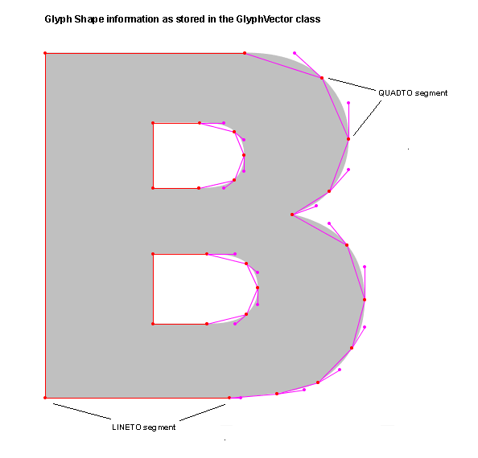
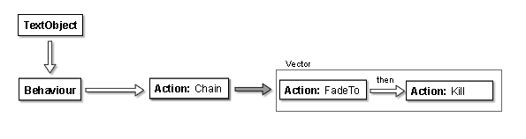

In order to avoid cluttering the high level class diagram, some classes have been omitted, notably:
Copyright (C) 2004,2005 Jason Lewis
$Revision: 1.16 $
$Date: 2005/05/19 14:13:20 $
This diagram describes the associations of the various classes that make up the NextText library. It covers both the internals of the library and the interface exposed to users of the library. Like in UML, arrows indicate the direction of association between classes. No arrows means a bi-directional association. White tipped arrows represent extends or implements.
In
order to avoid cluttering the high level class diagram, some classes
have been omitted, notably:
1. Other property types in net.nexttext.property
2. InputSource
and InputEvent implementations ( Mouse, Keyboard, Speech, etc.. ) in
net.nexttext.input
3. Other Java2DRendererCallbacks
4.
Implementations of AbstractAction (there are a lot of them, and they
are frequently updated).
5. Utility classes/interfaces like
Vector3, Locatable, Boundable
6. Exceptions
The Book's main purpose is to provide a place to find the other parts of the NextText system, and to start the simulator thread. Ideally, an application could run multiple NextText instances by having multiple books.
The Renderer is accessed as a member of the book. It is responsible for actually drawing the text, as delegated by the Simulator. The system is designed to allow different renderers to be used, several may be available by default. In addition, an application may wish to provide its own Renderer.
The information about TextObjects used by the Renderer is a vector curve description of the glyph, specified as a member of TextObjectGlyph.
Renderers include a callback facility to allow the main application to draw additional decoration such as grids, or object hierarchy blobs, and some may be provided with the renderer. These callbacks are specific to each renderer.
The renderer provides a method getCanvas(), which returns an awt Component, and allows users to determine the canvas size, and initialize mouse and keyboard inputs. It is preferred that this Component is not drawn to directly. Use callbacks instead.
The simulator provides the core processing loop for behaviours. It traverses the BehaviourList, and calls behave() on each behaviour. It then updates the Spatial Structure with the new locations of the objects. Finally, it calls the Renderer to draw the TextObjects.
The Simulator has a pause method, which will pause operation as soon as the current simulation & rendering iteration is complete. It is undesirable to stop the thread in the middle of this process.
The Simulator thread can be throttled to a certain number of frames per second, which is useful to ensure that an application will move at the same rate on faster hardware.
The thread loops, performing the following actions in order:
Update the SpatialList.
Call the Renderer.
Run the Behaviours.
Update the frame count.
Each iteration of the loop is synchronized on the book object. When an application updates the TextObject tree, it must also synchronize on the book. The TextObjectBuilder does this automatically.
The main text data is stored in a tree structure, with nodes of type TextObject. Leaf nodes are usually renderable glyph objects, while non-leaf nodes are always non-renderable grouping nodes. The groupings of the tree may be used for semantic classification, such as letters grouped into words, words grouped into sentences, etc. However, the tree can support other structures too.
Each TextObject has a set of named properties, which are used to store information for behaviours and the renderer. In order to encourage proper interaction between behaviours, a list of property names is maintained. The properties are grouped according to a registering package. Those in the standard package are initialized in the object upon construction. Those in other packages are initialized by the actions of that package, such as the abstract PhysicsAction. In this way, if an action inherits correctly, then it need never fear that the properties it needs are there.
TextObjectGroup extends TextObject by having children of type TextObject.
TextObjectGlyph extends TextObject by having a String member which is the glyph that it represents, and a vector curve representation of itself. The glyph is best treated as a single character.
Currently, the Glyphs are renderered using a list of Contours and a set of Control Points. Each Contour vector contains index values to the set of Control Points. For instance, the B shape has three contours, one outer outline and two more for the holes. Control Points are stored in one set so that they can be uniformally processed by DForm actions. The Shape data is originally extracted from the GlyphVector class in java.awt.font.
The following diagram illustrate the Shape information as read from the GlyphVector. It contains Line and Quad segments:

This
data is converted by the TextObjectGlyph class into our own format
made up only of Quads, as illustrated by this diagram:

In this format, any three consecutive control points represent a quadatric curve, as shown in the close up. This mean that the "start" point of a curve segment is also the "anchor" of another segment. The result is a curve that will deform smootly. Note that to preserve sharp corners, successive Control Points are created at the same location. This information can be used to generate a Java GeneralPath object which can be rendered using Java2D. The code that generates a GeneralPath out of the Control Points information is in the Java2DRenderer.
TextObjectBuilder
The TextObjectBuilder makes adding TextObjects to NextText easier. It provides methods that generate TextObjects from String objects and add them to NextText as words or phrases. A TextObjectBuilder is configured with a location in the NextText TextObject tree, and an initial set of properties and behaviours. The TextObjectBuilder also provides rules for layout, and can adjust position of new and exisiting glyphs and words according to those rules.
Property objects specify the values of named properties of TextObjects and Actions. They store and make accessible the original value that they were created with. Each type of data has its own subclass of Property:
NumberProperty
Vector3Property
A 3-tuple used
for positions and vectors.
Vector3PropertyList
A List containing Vector3Property objects
StringProperty
BooleanProperty
ColorProperty
ShapeProperty
Properties are stored in a PropertySet object, which contains method to read, write and initialize new properties.
The SpatialList is an alternative view of all of the TextObjects, from a spatial perspective. Its purpose is to provide an easy way to determine spatial relations between TextObjects, useful to many behaviours.
Applications have to manually add TextObjects to this list, or use the TextObjectBuilder, which can do it automatically.
Position of objects is generally stored as an offset from their parent object. This makes determining all objects' positions intensive, because position calculation requires traversal to the root of the tree for each leaf. To counteract this, in the future NextText may calculate and store absolute position as the spatial list is developed.
Active behaviours are stored in a single list, which is processed by the simulator thread. Each Behaviour tracks the objects it should act on, so they are not stored in the BehaviourList.
The Behaviour model is based on two type of objects: Behaviours and Actions.
Action: Actions are the bits that manipulate the
TextObjects's properties. Actions are usually simple blocks of code
doing a specific task.
Behaviour: Behaviours
act as a top-level container for one or more actions. They maintain
a list of TextObjects to affect, and handle addition or removal of
objects from that list.
The following diagram illustrate the flow of control in the Behaviour/Action chain:

Some actions allow you to "chain" with other actions to create more elaborate constructs, such as Conditions, Chain or Multiplexers. For instance, a FadeTo black then destroy the object is constructed as follows around the Chain action:

Some
actions extend the basic AbstractAction class, such as PhysicsAction,
to provide an additional set of properties to be added to
TextObjects.
This is the main class which allows behaviours to interact with the user. The behaviour requests named input sources from this class. The application can remove and add input sources through this class too. The input source namespace is described in an appendix to this document.
An InputSource provides a non-blocking interface to external events, allowing behaviours to be interactive. The InputSource class provides generic access to events through an EventIterator, subclasses provide specialized state information. InputSources do not provide notification to Behaviours, they must be polled. An InputSource's state must be updated before an event is sent, so that systems reacting to events can be sure that if they then check the state, the received event is reflected there.
There are several types of InputSource, each with its own abstract subclass of InputSource. Concrete subclasses of these provide actual implementations of the input source. Each type of input source has an associated type of event. The following types of input sources are defined, along with the natural default concrete implementations:
MouseInput
Keyboard
TextStream
Speech
VideoSegmenter
This class is used to iterate over events from a specific InputSource. It differs slightly from a usual Java iterator, in that events can be added, so hasNext() can return true even if it has returned false in the past. Also, events are buffered at the InputSource level, so if an EventIterator is not polled sufficiently often, events may be lost.
Event is an interface, with subclasses generally corresponding to the types of input sources.
Inputs
The following input names are defined.
|
Keyboard |
Get events from the system keyboard. |
|
Mouse |
Get events from the system mouse. |
|
TextStream |
Get character events from a text stream. By default this is attached to the keyboard. |
|
Speech |
Events from a SpeechRecognition engine. |
|
VideoSegmenter |
Objects segmented from a video stream. |
The open issue section has been moved to Bugzilla and on the Wiki at obx.hexagram.ca. It is accessible from the NextText project page.